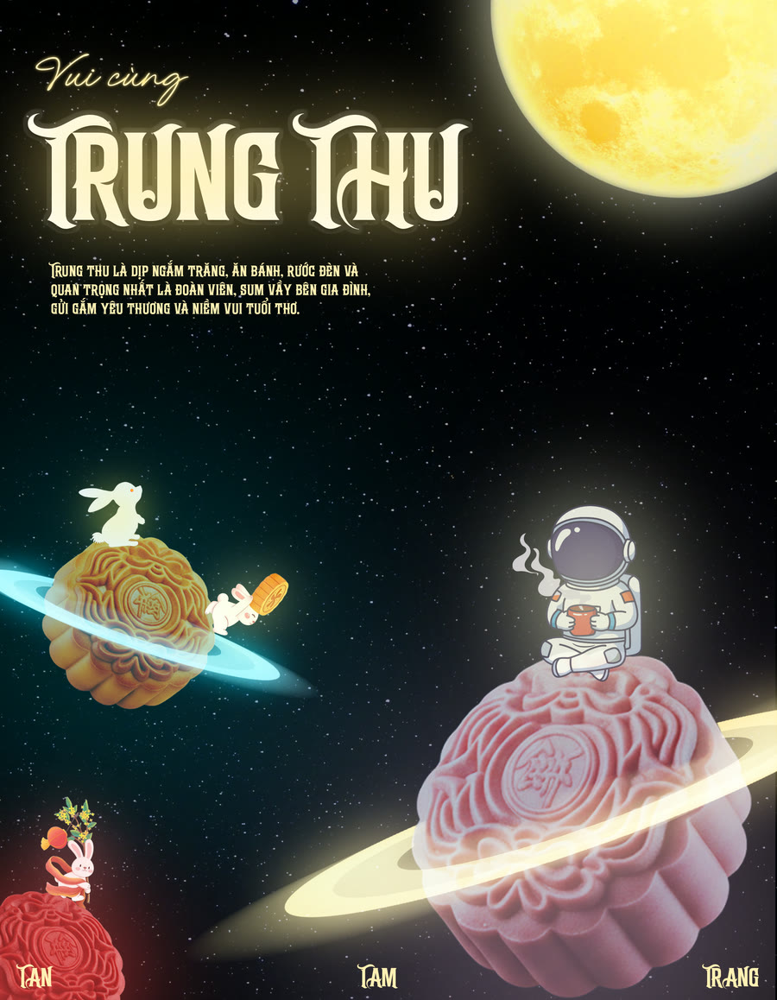
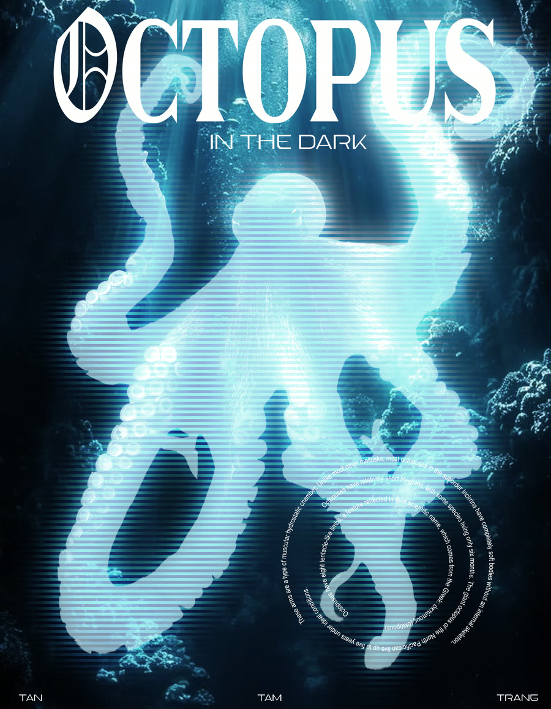
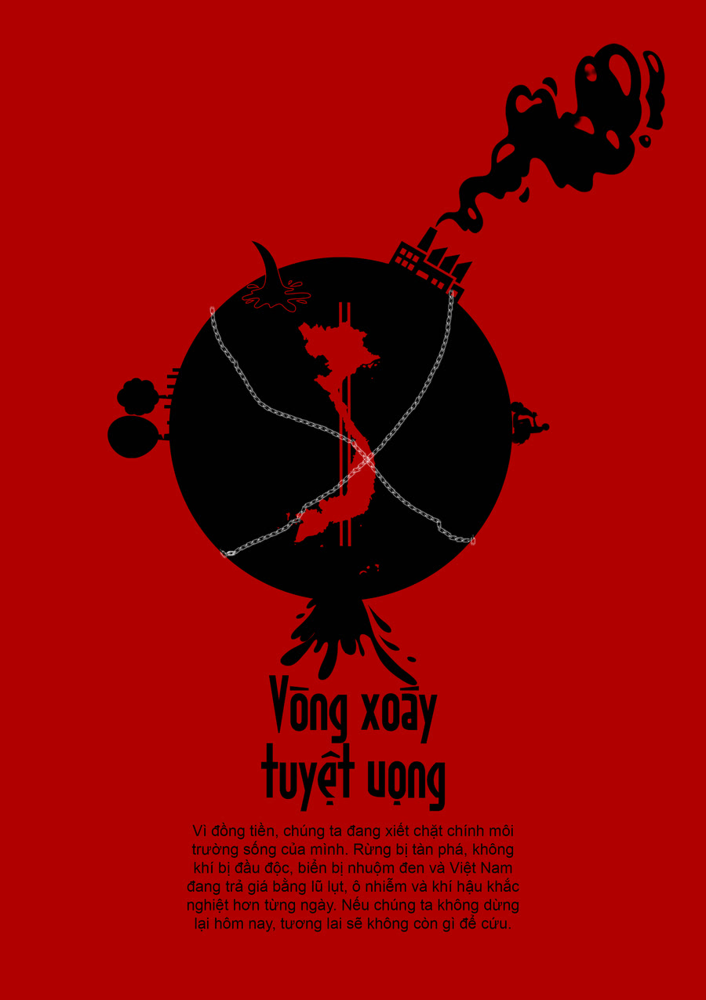
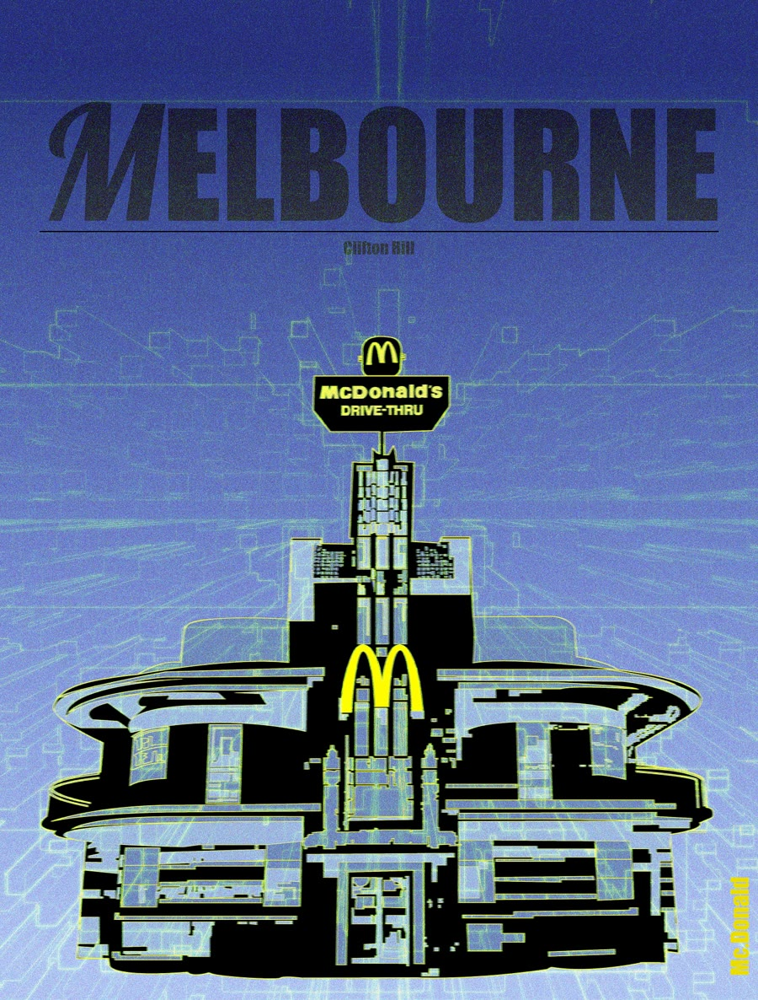
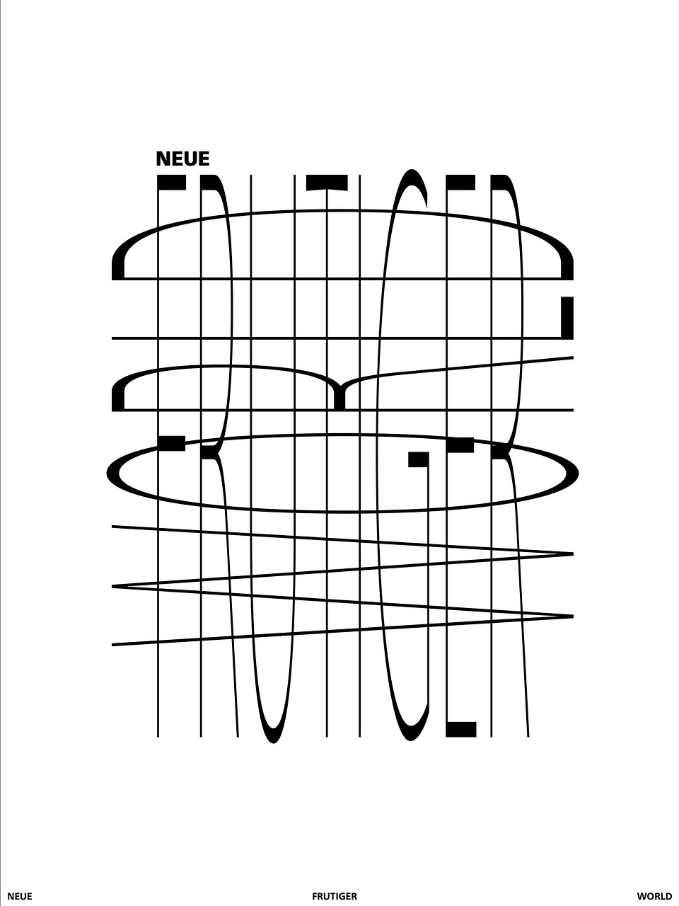
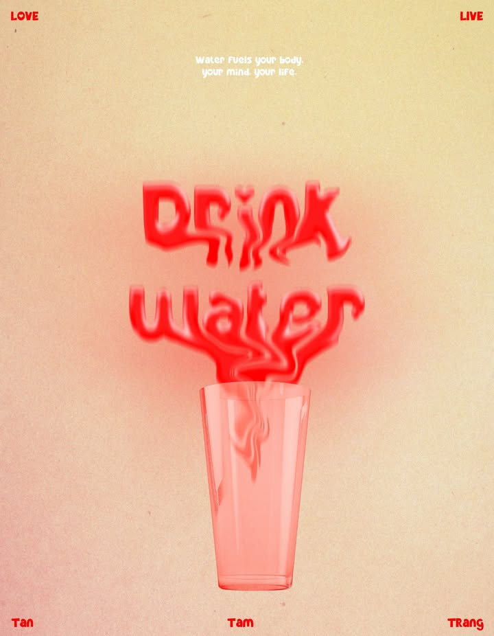
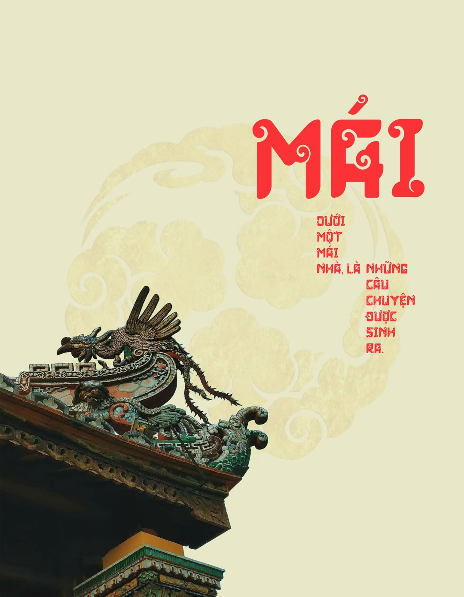
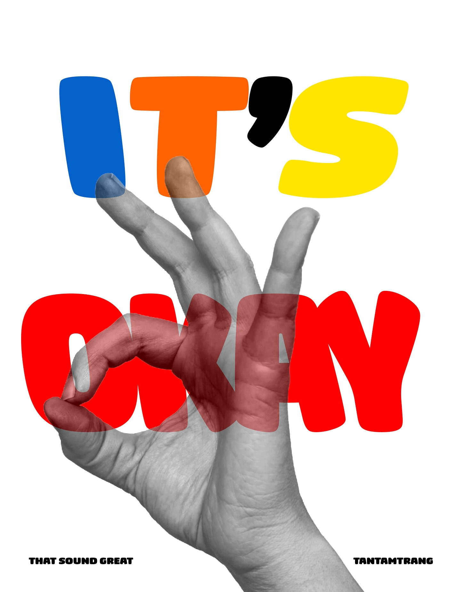

POSTER
A collection of poster designs exploring typography, composition, and visual experimentation. Each piece investigates different approaches to visual communication, using form, contrast, and layout to transform ideas into distinctive visual expressions.
← Back to Works
VUI CUNG TRUNG THU
Mid-Autumn Festival — Poster Design
A poster designed to celebrate the Vietnamese Mid-Autumn Festival, capturing the festive spirit through colourful illustrations and playful visuals.
Concept
Reimagining traditional mooncakes as planets in a whimsical universe, blending Vietnamese cultural elements with a space-inspired aesthetic.

OCTOPUS IN THE DARK
Octopus in the Dark — Poster Design
An experimental poster exploring the mysterious world of deep-sea creatures through typography, digital effects, and atmospheric visuals.
Concept
Inspired by the darkness of the deep ocean, the design transforms an octopus into a glowing, almost holographic figure, using electric blue tones, distortion, and contrast to create a sense of mystery and depth.

INTO THE FOREST
Ở Trong Khu Rừng — Music-Inspired Poster
A cinematic poster inspired by the song Cáo và Hoa by Nguyễn Hùng, translating its poetic atmosphere into a dreamlike forest scene.
Concept
A fox reaching towards a single flower beneath the sunlight symbolises curiosity and longing. Deep green tones, dramatic lighting, and atmospheric depth create a magical, emotional visual narrative.

CƠM TẤM
Cơm Tấm — A Taste of Saigon
A cultural poster celebrating Cơm Tấm, one of Saigon's most iconic dishes, alongside the city's distinctive architecture and cultural landmarks.
Concept
Combining traditional Vietnamese cuisine with recognisable Saigon landmarks, the design uses a vintage collage aesthetic, warm colours, and textured paper to capture the city's cultural identity and nostalgic charm.

MADE IN VIETNAM
Made in Vietnam — Poster Design
A contemporary poster celebrating Vietnamese cultural identity, highlighting the connection between traditional heritage and modern graphic design.
Concept
Using chopsticks as a symbol of Vietnamese culture, the design integrates photography with bold typography and a vibrant red background to express cultural pride through a minimal yet striking composition.

VÒNG XOÁY TUYỆT VỌNG
Vòng Xoáy Tuyệt Vọng — Environmental Awareness Poster
A conceptual poster addressing environmental pollution and the destructive consequences of human greed.
Concept
Using money as a symbol of power and blindness, the design visualises how profit-driven actions can damage nature, turning environmental crisis into a cycle of destruction and neglect.

LOOKING
Mấy Con Mèo — Music-Inspired Poster
An experimental poster inspired by the rap song Mấy Con Mèo by Datmaniac, translating its feline theme into a playful and expressive visual composition.
Concept
Combining oversized typography with a kitten illustration, the design uses vibrant green and blue tones, layered imagery, and bold contrasts to create a youthful, unconventional aesthetic.

MELBOURNE
Melbourne — Clifton Hill McDonald's
An architectural poster highlighting the distinctive vintage-style McDonald's building in Clifton Hill, Melbourne.
Concept
Combining retro architecture with experimental digital aesthetics, the design uses electric blue tones, bold typography, and high-contrast effects to reinterpret a local landmark through a contemporary visual perspective.

NEUE FRUTIGER WORLD
Scale It — Typography Poster
An experimental typography poster exploring the manipulation of letterforms through scale, distortion, and geometric composition.
Concept
Inspired by the Neue Frutiger typeface, the design stretches and transforms letterforms within a structured grid, creating a dynamic visual rhythm through contrast, repetition, and abstraction.

DRINK WATER
Drink Water — Typography Poster
A playful typography poster delivering a simple yet essential reminder to stay hydrated every day.
Concept
Using fluid, distorted typography flowing into a transparent glass, the design transforms the everyday act of drinking water into a fun and visually engaging message.

MÁI
Mái — Stories Beneath the Roof
A conceptual poster exploring the meaning of home as a place where memories, experiences, and personal stories unfold from childhood to adulthood.
Concept
Inspired by traditional Vietnamese architecture, the roof symbolises a shelter for life's countless stories. Through cultural imagery and expressive typography, the design reflects the memories, emotions, and experiences that shape who we become.

IT'S OKAY
It's Okay — Typography Poster
A playful and uplifting poster delivering a simple message of reassurance: no matter what happens, everything will be okay.
Concept
Combining colourful, bold typography with a monochrome hand gesture, the design uses visual contrast and playful composition to communicate positivity, comfort, and optimism.